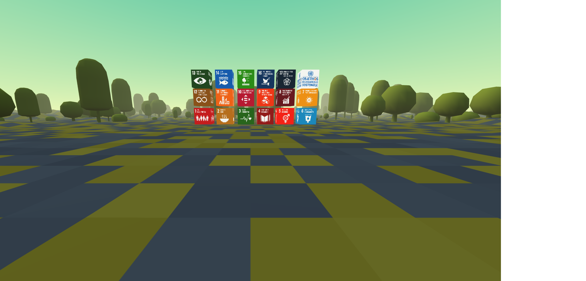
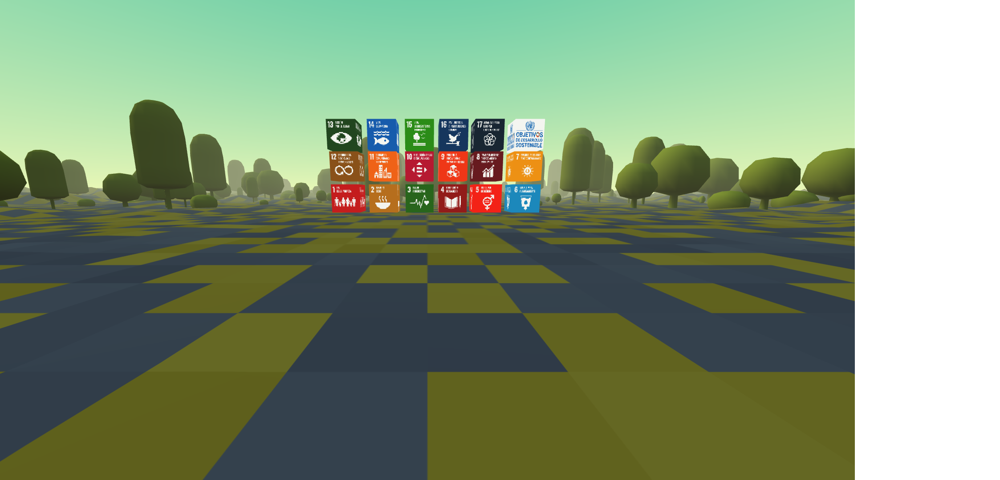

A nivel mundial, el número de personas que viven en situación de extrema pobreza disminuyó desde un 36 % en 1990 hasta un 10 % en 2015. No obstante, el ritmo al que se produce este cambio está disminuyendo, y la crisis de la COVID-19 pone en riesgo décadas de progreso en la lucha contra la pobreza. Una nueva investigación publicada por el Instituto Mundial de Investigaciones de Economía del Desarrollo de la Universidad de las Naciones Unidas advierte de que las consecuencias económicas de la pandemia mundial podrían incrementar la pobreza en todo el mundo hasta llegar a afectar a 500 millones de personas más, o lo que es lo mismo, a un 8 % más de la población total mundial. Esta sería la primera vez que la pobreza aumente en todo el mundo en 30 años, desde 1990.
 
